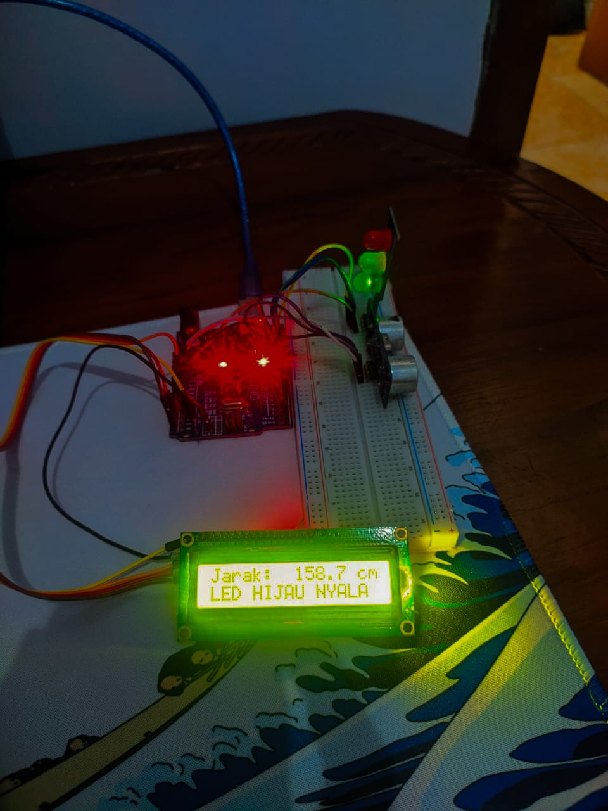

Pada proyek ini, saya membuat sistem pendeteksi jarak menggunakan sensor ultrasonik HC-SR04. Hasil pengukuran ditampilkan pada layar LCD I2C, dan LED RGB berfungsi sebagai indikator visual berdasarkan jarak yang terdeteksi.
| Komponen | Jumlah |
|---|---|
| Arduino Uno | 1 |
| Sensor Ultrasonik HC-SR04 | 1 |
| LCD I2C 16x2 | 1 |
| LED RGB (Common Cathode) | 1 |
| Kabel Jumper | Secukupnya |
Sistem bekerja dengan langkah berikut:
Proyek ini dapat diterapkan dalam berbagai sistem otomatisasi, seperti:
Dengan memanfaatkan kombinasi sensor ultrasonik, LCD I2C, dan LED RGB, sistem ini memberikan pengukuran jarak secara real-time yang mudah dibaca baik secara visual maupun digital. Proyek ini menjadi langkah awal yang bagus untuk mempelajari sensor, output tampilan, logika pemrograman, dan pengembangan sistem IoT lebih lanjut.